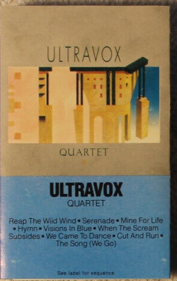

CASSETTE
Quartet
Ultravox
Media: — · Sleeve: —
—
Personal
Discogs SuggestedCA$10.71
Discogs MedianCA$10.71
Discogs HighCA$10.71
- Physical Copy ID
- BB-CAS-336
- Year
- 1982
- Label
- Chrysalis
- Catalog #
- FVT 41394
- Country
- USUS
- Genre / Style
- Electronic, Rock · New Wave, Synth-pop